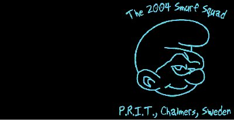

|  | |
|
P.R.I.T. ...är Teknologsektionen Informationstekniks PR-förening. En PR-förening kan till exempel ha hand om sektionspuben på pubrundan och anordna roliga aktiviteter. De främjar sammanhållningen inom sektionen, vördar sektionens helgon och gycklar ganska ofta. Personerna i P.R.I.T. är utöver detta nördiga, med på de flesta festerna, kan för många datarelaterade skämt (lol), går igång på smurfar och har matchande turkosa byxor.I år är vi är tre tjejer, pandapop, reaggerock och akrobatparty, och två killar, brat och ninja, och vi håller ihop stenhårt. Vi ÄLSKAR varandra. Vi älskar Nollan också och kommer att möta henne/honom vid Götaplatsen.Håll utkik efter turkosa byxor! Där finns omtyckning, ömhet och partaj. Fråga oss gärna en massa frågor, vi kan allt och är dessutom ödmjuka." | senast uppdaterad | 041126 | disclaimer | |
|